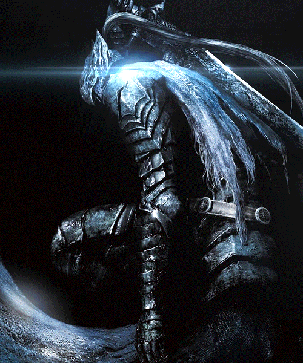
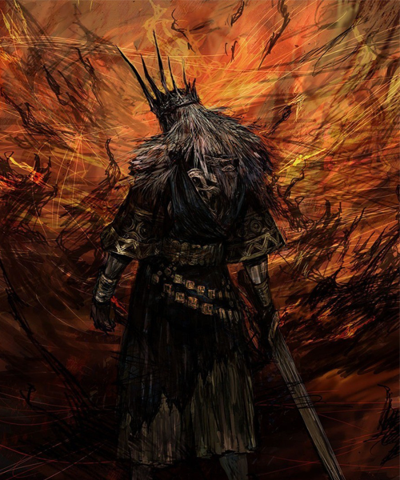
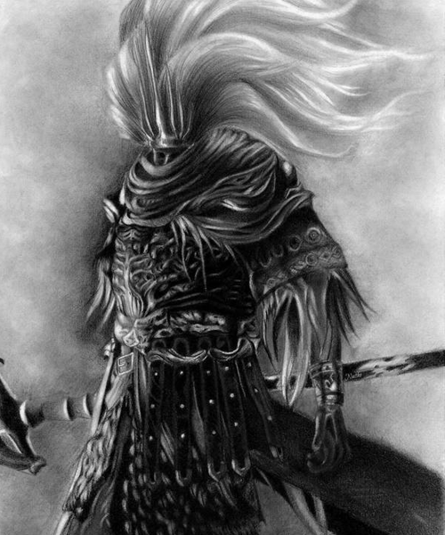
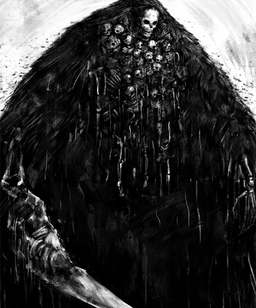
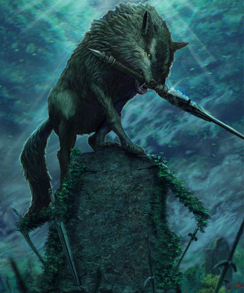
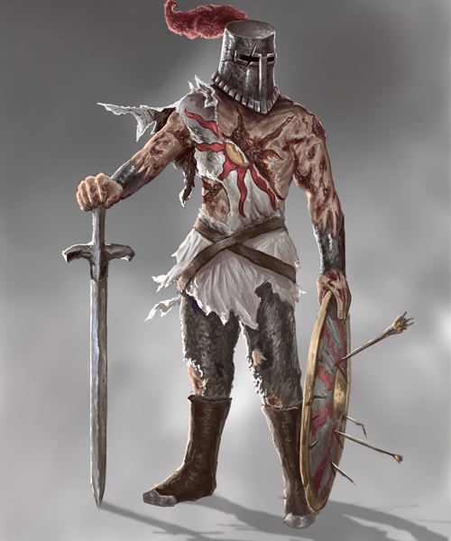
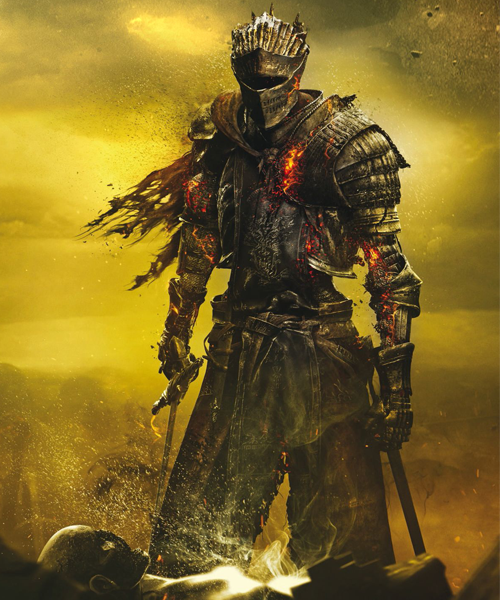
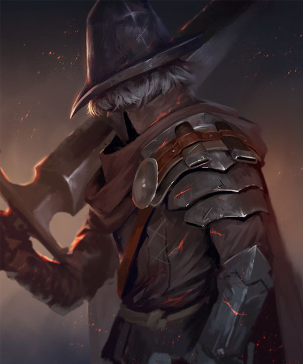
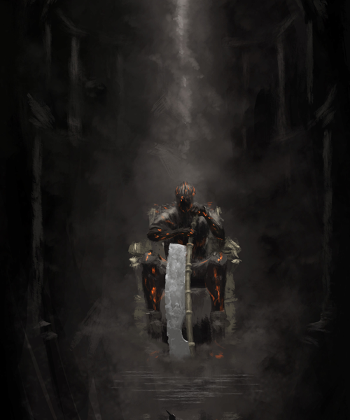

Galería de Retratos
Paisajes
Retratos
Obras de arte

Artorias nell'abisso

Gwyn, señor de la ceniza

El rey sin nombre

Nito el primer no muerto

Sif, el gran lobo gris

Solaire de Astora

Alma de cenizas

Los Vigilantes del abismo

Yhorm, el gigante